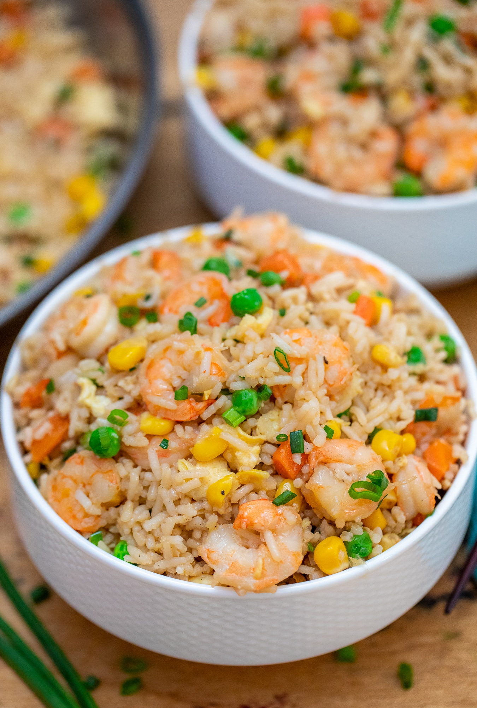
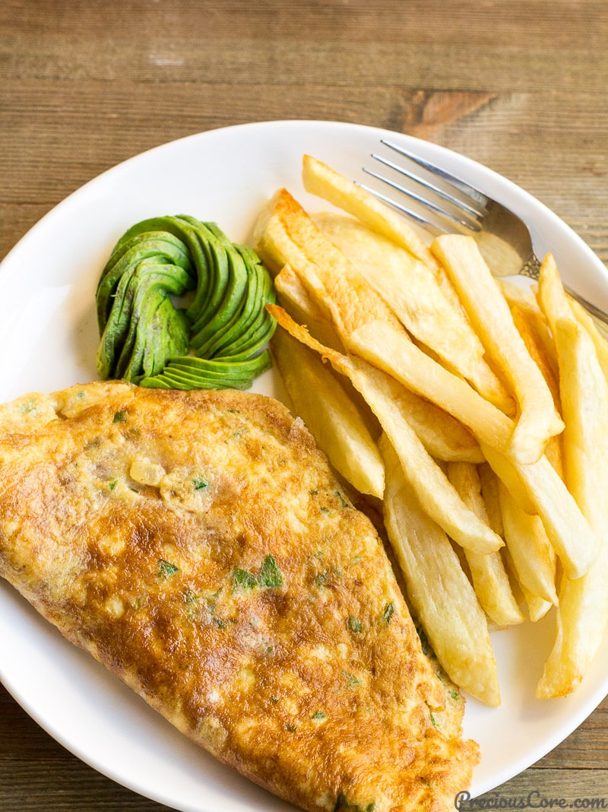

On a saturday morning, i woke up and and started craving Lasagna,
then I wondered how lasagna would taste like if i had my own special recipe
so i decided to try mine... so here we go.

Preparation Time: 15 mins
Cook Time: 90 mins
Total Time: 105 mins
Serving: 8 people
| Ingredients | Measurements |
|---|---|
| Extra virgin oil | 2 teaspoons |
| Ground beef chunk | 1 pound |
| Onions | 1/2 medium diced (about 3/4 cup) |
| Bell pepper (green, red, or yellow) | 1/2 large diced (about 3/4 cup) |
| Cloves garlic | 2 medium size minced |
| Tomato sauce | 1 (28-ounce)can |
| Tomato paste | 3 ounces (half a 6-ounce can) |
| Crushed tomatoes | 1 (14 ounce) Can |
| Fresh oregano | 2 tablespoons chopped |
| Dried oregano | 2 teaspoons |
| Fresh parsley (preferably flat leaf) | 1/4 cup chopped |
| Italian seasoning | 1 tablespoon |
| garlic powder and/or garlic salt | 1 pinch |
| red or white wine vinegar | 1 tablespoon |
| sugar (to taste, optional) | 1 tablespoon to 1/4 cup |
| Salt | To taste |
To Assemble the Lasagna
- 1/2 pound dry lasagna noodles (requires 9 lasagna noodles -
unbroken) - 15 ounces ricotta cheese
- 1 1/2 pounds (24 ounces) mozzarella cheese, grated or sliced
- 1/4 pound (4 ounces) freshly grated Parmesan cheese
Method of Cooking
- Put pasta water on to boil
Put a large pot of salted water (1 Tbsp salt for every 2 quarts of water)
on the stovetop on high heat. It can take a while for a large pot of water
to come to a boil (this will be your pasta water),
so prepare the sauce in the next steps while the water is heating. - Brown the ground beef
In a large skillet heat 2 teaspoons of olive oil on medium high heat.
Add the ground beef and cook until it is lightly browned on all sides.
Remove the beef with a slotted spoon to a bowl. Drain off all but a
tablespoon of fat. -
Cook the bell pepper, onions, garlic, add back the beef
Add the diced bell pepper and onions to skillet Cook for 4 to 5 minutes, until the onions are translucent and the
peppers softened. Add the minced garlic and cook half a minute
more. Return the browned ground beef to the pan. Stir to combine, reduce
the heat to low and cook for another 5 minutes. - Transfer to medium sized pot, add tomatoes and remaining sauce ingredients to build the sauce
Transfer the beef mixture to a medium sized (3- to 4-quart) pot.
Add the crushed tomatoes, tomato sauce, and tomato paste to the pot.
Add the parsley, oregano, and Italian seasonings, adjusting the
amounts to taste. Sprinkle with garlic powder and/or garlic salt, to
taste.
Sprinkle with red or white wine vinegar. Stir in sugar, a tablespoon at
a time, tasting after each addition, to taste. (The amount of sugar
needed will vary, depending on how acidic the tomatoes are that you
are using.)
Add salt to taste, and note that you will later be adding Parmesan,
which is salty.
Bring the sauce to a simmer and then lower the heat to maintain a
low simmer. Cook for 15 to 45 minutes, stirring often. Scrape the
bottom of the pot every so often so nothing sticks to the bottom
Remove from heat. and scorches.
-
Boil and drain the lasagna noodles
By now the salted water you started heating in step one should be
boiling. Add the dry lasagna noodles and cook them to al dente,
per package directions. (Note noodles may be cooked in advance.)
Stir often to prevent from sticking. Make sure that water remains at
a full rolling boil during the entire cooking to prevent noodles from
sticking.
When ready, drain in a colander and rinse with cool water, gently
separating any noodles that may be sticking together.
Spread a little olive oil on a large rimmed baking sheet, and lay out
the cooked noodles on this sheet, turning them over so that they get
coated with a little of the olive oil. This will prevent them from
sticking together. - Heat the oven to 375°F
-
Assemble the lasagna
In a 9x13-inch casserole or lasagna dish, ladle a cup of sauce and
spread it over the bottom of the dish. Arrange one layer of lasagna
noodles lengthwise (about 3 long noodles, edge may overlap,
depending on your pan) over the sauce. Ladle a third of the remaining sauce over the noodles.
Sprinkle a layer of a third of
the grated mozzarella on top of lasagna
sauce. Add half of the ricotta cheese, by placing cheese dollops
every couple inches. Sprinkle half the grated parmesan cheese
evenly over the top of ricotta cheese.
Apply second layer of noodles, top it with half of the remaining
sauce. Add half of the remaining Mozzarella, the remaining ricotta
cheese, and another the remaining Parmesan.
Finish with another layer of noodles. Spread the remaining sauce
over the top layer of noodles and sprinkle with the remaining
Mozzarella cheese. -
Bake
Cover the lasagna pan with aluminum foil, tented slightly so it
doesn't touch the noodles or sauce). Bake at 375°F for 45 minutes.
Uncover in the last 10 minutes if you'd like more of a crusty top or edges. -
Cool and serve
Allow the lasagna to cool at least 15 before serving. Leftovers will
keep for about 5 days. May be reheated in conventional oven or
microwave. Leave aluminum tent on for storage. (Try to keep the
aluminum foil from touching the sauce.)
You may also like

Taco

Spaghetti and Meatballs

Fried rice shrimp

Potato salad

Mac and Cheese

Fried potatoes and egg